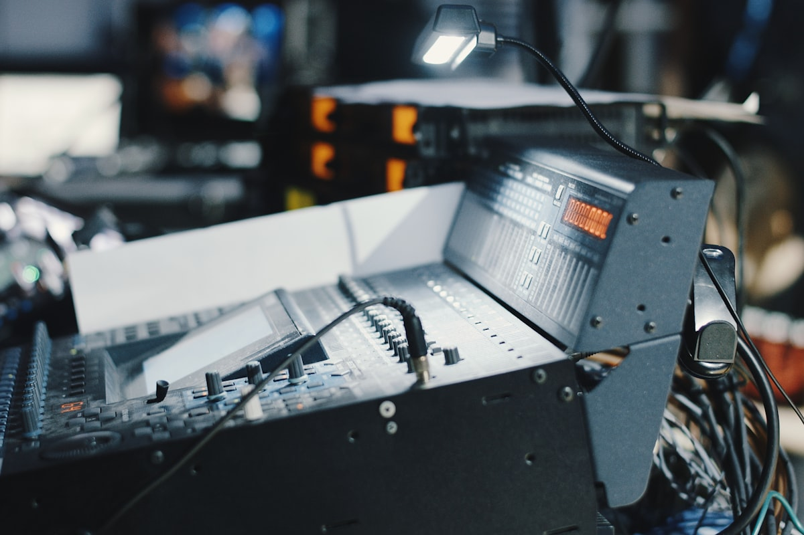
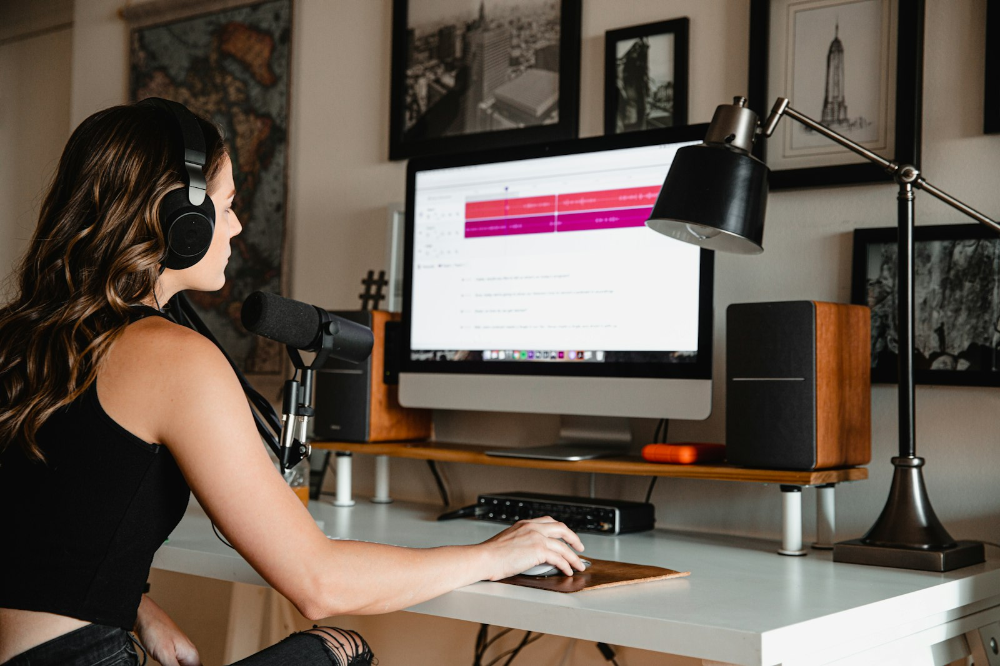

BUTT vs Radio Streamer: an honest comparison
Both push audio to Icecast. They are built for different workflows, and the right pick depends almost entirely on whether you produce in OBS.
Published 2026-05-08 / 8 minute read

The short answer
- If your audio production already lives inside OBS, use Radio Streamer.
- If you do not use OBS, or you are on Windows or Linux, use BUTT.
- Both are free, open source, and GPL-licensed. Neither will lock you in.
That is the call most people are looking for. The rest of this post is for readers who want the reasoning.
What each one is
BUTT (Broadcast Using This Tool)
A standalone Qt application maintained for over a decade. Reads from system audio inputs (your microphone, virtual cables, anything CoreAudio/ALSA/WASAPI exposes), encodes, and pushes to Icecast or Shoutcast. Has its own GUI with level meters, a small EQ, ICY metadata fields, and a long list of supported codecs. Runs on Windows, macOS, and Linux. The reference for "I just want to push audio to a radio server."
Radio Streamer
An OBS Studio plugin. Adds a dock that reads from any OBS audio track (1 through 6), encodes via FFmpeg, and pushes to Icecast. Lives inside OBS, reuses OBS's audio mixer, and keeps the broadcast independent of OBS's main video output. Currently macOS Apple Silicon only.
Side-by-side
| Feature | BUTT | Radio Streamer |
|---|---|---|
| Audio source | System audio devices | OBS audio tracks (1-6) |
| Runs as | Standalone app | OBS plugin (in-process) |
| Platforms | Windows, macOS, Linux | macOS Apple Silicon only (1.0) |
| Codecs | MP3, AAC, Opus, OGG, FLAC, WAV | MP3, AAC, Opus |
| Built-in EQ | Yes | No (use OBS audio filters) |
| ICY metadata push | Yes (song title and artist) | Not yet (on roadmap) |
| Independent of OBS main output | N/A (separate app) | Yes (key differentiator) |
| Reconnect on drop | Yes | Yes (2/5/10/20/30 seconds) |
| Audio routing | Picks one device or virtual cable | Picks one OBS track (already mixed) |
| Maturity | Released 2007, very stable | Released 2026, newer |
| License | GPLv2+ | GPLv2+ |
| Cost | Free | Free |
Pick BUTT if
- You do not use OBS, and you do not plan to. A DJ-only rig pushing music or a microphone to Icecast is exactly what BUTT was built for.
- You are on Windows or Linux. Radio Streamer's 1.0 is macOS only.
- You need song metadata (ICY title/artist) for now-playing displays in your station.
- You need codecs Radio Streamer does not support yet, like FLAC or AAC-HE.
- You want a 20-year-mature tool with a deep user community and decades of accumulated documentation.
Pick Radio Streamer if
- You already produce in OBS. Mics, music, call-in audio, soundboard cues are all routed in OBS's mixer. Radio Streamer reads any of that as a track.
- You run video and radio at the same time. Record locally, stream to Twitch or YouTube on the main encoder, and broadcast a separate radio audio mount on the side, all from one OBS instance.
- You want one app, one mixer, one workflow.
- You are on macOS Apple Silicon.
- You value sub-second startup. Radio Streamer optimizes for instant on-air time.
Things BUTT does that Radio Streamer does not (yet)
- ICY metadata push. Now-playing track info displayed on AzuraCast or your custom player. Radio Streamer plans to add this; it is not in 1.0.
- Built-in EQ. BUTT has parametric EQ in the app. Radio Streamer expects you to use OBS's audio filters (which are arguably more capable, but it is an extra step).
- Windows and Linux support. Planned, not shipping.
- FLAC, OGG Vorbis, WAV. Niche codecs that BUTT supports. Radio Streamer covers the three common ones (MP3, AAC, Opus) and not the long tail.
- Standalone use. If you are not running OBS, BUTT works; Radio Streamer does not.
Things Radio Streamer does that BUTT does not
- Lives inside OBS. No separate app to launch, no virtual cable to install, no second mixer to keep in sync.
- Reads OBS audio tracks directly. The same mixer routing you already use for video streaming feeds the radio output. No CoreAudio aggregate device gymnastics.
- Independent of the OBS main encoder. Recording to disk, streaming to Twitch, and broadcasting to Icecast are three independent pipelines. None of them stalls when another starts or stops.
- Sub-second activation. The plugin pre-allocates buffers and starts FFmpeg with explicit raw-pipe settings to skip the format probing that adds three or four seconds to most setups.
- Sanitized credentials in OBS logs. FFmpeg's stderr is filtered before it reaches the OBS log so the source URL password does not end up in support files.

Migration: BUTT to Radio Streamer
If you are an OBS-using BUTT operator considering the move:
- Install Radio Streamer.
- Move your audio sources into OBS (mic, music player, call-in app) if they are not already there.
- Use
Advanced Audio Propertiesin OBS to route the radio-relevant sources to a dedicated track. Track 2 is conventional, leaving Track 1 for the main video stream's audio. - Open
Docks > Radio Streamer. Paste the same Icecast URL you used in BUTT. Pick the same codec and bitrate. - Click Start. Confirm the mount on your Icecast or AzuraCast dashboard.
- Quit BUTT.
The Icecast server does not know or care which client is pushing audio. As far as the listener is concerned, nothing changed.
Honest tradeoffs
Radio Streamer is newer than BUTT by about nineteen years. It does fewer things, ships fewer features, and runs on fewer platforms. None of that is a flaw; it is the cost of being focused. BUTT covers a wider surface area, and that surface area is genuinely valuable if you need it.
The case for Radio Streamer is not "it is better than BUTT." The case is "if you produce in OBS, the integration is worth more than any feature BUTT has that Radio Streamer lacks." If you do not produce in OBS, that argument does not apply, and BUTT is a fine choice.
There is also no shame in running both. A station can have one mount fed by BUTT during scheduled music programming and another mount fed by Radio Streamer during live shows produced in OBS. The Icecast server is happy.
Wrap up
Pick the tool that matches your workflow, not the one with the longer feature list or the bigger user count. Both BUTT and Radio Streamer are solid Icecast source clients. They just live in different places.
Have a setup that does not fit either pattern? Open an issue on the GitHub repository. Real-world workflow notes shape the roadmap.